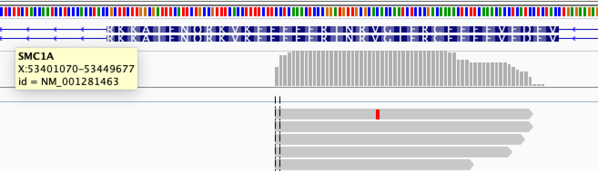
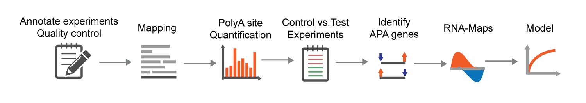

We provide pipelines for protocol-specific computational analysis of short and long reads. Currently, expressRNA supports Lexogen QuantSeq Reverse and Forward protocols, standard RNA-seq and Nanopore direct RNA. Please see below details of how we process reads from these protocols to compute a polyA database and count table.
We map (align) the reads to the reference genome with
STAR. To
build the genome index, we include GTF annotation files:
STAR --runMode genomeGenerate --genomeDir output_folder --genomeFastaFiles genome.fasta --sjdbGTFfile genome.gtf
After we align raw reads to the reference genome (default STAR settings) allowing soft clipping of bases and only reporting unique/best alignments are inclusive of at least 20% of the read length:
--outFilterMultimapNmax 1 --outFilterMatchNminOverLread 0.2 --outFilterScoreMinOverLread 0.2

The reads align in the opposite direction of genes (in the figure gene SMC1A on - strand and reads aligning to + strand, hg19).
The cleavage site is noted as the 5' of the aligned read.
We then iterate over each alignment taking the first (5') nucleotide as a potential polyA cleavage site. We check the surrounding genomic sequence [-30..10] for A-rich regions. If this region contains either AAAAAAA or #A > 8, the alignment is filtered out. However, if we find a polyA signal (PAS) / hexamer in the region [-30..0] then the alignment is kept.
We then combine the remaining alignments and construct the library polyA database. Since cleavage and polyadenylation is not nucleotide exact, we sort all positional values (genome wide) from highest to lowest and perform a clustering of values in the range [-25..25]. We produce a table (bed graph) of the genomic loci and annotate polyA sites to genes with 5KB downstream extension (or up to max half-distance to downstream gene).
To compute the polyA count table, we take each genomic loci in the library polyA database and count the number of alignments (5' nucleotide) from each experiment separately in the vicinity of the polyA site (-5..5 nt). Counting considers all alignments from each experiment in the library. Filtering is only applyed in the steps of constructing the library polyA database to account for internal priming events.
expressRNA implements
alternative polyAdenylation (APA) analysis from 3'-end short-read targeted sequence data and long-read Nanopore / PacBio data. In general the analysis is flexible to accomodate diverse sequence data, for example
Lexogen Quantseq Forward and Reverse protocols are well supported.
The following steps are crucial for APA analysis:
map / align the reads to the reference with STAR short read aligner
construct a polyA atlas / database by clustering alignment ends (or beginnings, depending on the protocol)
filter out alignments from A-rich genomic regions (to avoid internal priming events in the atlas construction step)
recover the signal by computing the "expression" of polyA sites by clustering
define comparative analysis (set of control experiments vs. set of test experiments)
run DEXSeq analysis on the polyA sites
select two sites per gene to classify polyA events (shortening, lenghtening of genes)
perform motif analysis around regulated sites with RNAmotifs2
Gene Ontology Enrichment Analysis on APA regulated genes

The above list is just a set of automated analysis that can be performed on a set of experiments. Of course several alternatives can be implemented, such as using a pre-existing polyA atlas (database) for the analysis and computing the polyA site usage (counts) on the provided polyA site atlas.
Part of an APA report is a graphical representation of gene shortening and lenghtening. Our case study was an experiment of HEK-293 control vs.
TDP-43 KD. Repressed genes are blue (proximal polyA site is less used compared to the distal), and vice-versa for the enhanced genes.
Open the analysis here.
expressRNA provides the basic analysis in a completelly automatized fashion, however for research projects a lot of custom work still needs to be performed in terms of data quality control and pre-processing. Currently we are working to automatize all steps of analysis.